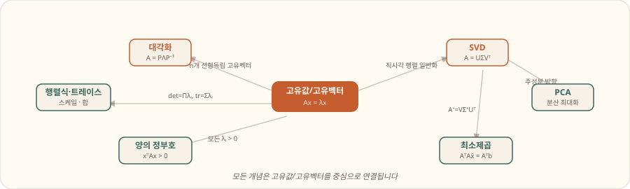

Paths
이제는 세 갈래로 보면 됩니다
지금 필요한 것은 정보량을 더 붙이는 것이 아니라, 같은 내용도 읽는 모드와 연습하는 모드를 분리하는 것입니다. 아래 세 페이지는 각각 목적이 다릅니다.
Reading Guide
서울대 스타일 기준으로 보면 무엇이 달라지나
서울대 AI 선형대수 구술면접은 단일 정의 암기보다 비교형, 조건형, 반례형, 연결형 질문으로 들어올 가능성을 높게 두고 준비하는 편이 좋습니다. 그래서 이제는 "개념 많이 보기"보다 "어떤 모드로 보는지"를 분리하는 것이 더 중요합니다.
개요에서 질문 패턴 파악
→
이론에서 개념 이해
→
문제 연습에서 답변 압축
절대 실수 금지 1
대각화 조건 ≠ rank
정답은 선형독립인 고유벡터가 n개
절대 실수 금지 2
σᵢ = √λᵢ(AᵀA)
특이값은 고유값의 제곱이 아님
절대 실수 금지 3
실수 행렬 ⇒ 실수 고유값?
항상 아님. 실수 대칭행렬이면 항상 실수
Strategy
서울대 AI 선형대수 구술면접 준비 프레임
Definition Anchor
정의를 먼저 고정하기
고유값, 대각화, SVD, PCA, PD/PSD, rank-nullity처럼 자주 나오는 개념은 한 줄 정의가 먼저 흔들리지 않아야 합니다.
Comparison Frame
차이점과 장단점을 같이 말하기
EVD vs SVD, 대각화 vs 직교대각화, PCA의 두 관점처럼 대상 행렬, 조건, 해석, 장점을 한 묶음으로 정리합니다.
Condition & Counterexample
조건을 자르고 반례를 드는 연습
실수 행렬과 실수 대칭행렬을 구분하고, full rank와 대각화 가능성을 구분하는 식으로 잘라 말해야 합니다.
Stats Bridge
확통과 ML로 자연스럽게 이어가기
covariance matrix, PCA, Gaussian noise, least squares를 함께 말할 수 있으면 답변이 훨씬 강해집니다.
개념 복구
핵심 개념을 한 번 끊김 없이 설명합니다.
비교형 질문
EVD vs SVD, 대각화 vs 직교대각화, PCA 두 관점을 묶습니다.
조건과 반례
실수 대칭행렬, full rank, PSD, unique least squares를 반례와 함께 연습합니다.
확통 연결
covariance, Gaussian noise, 독립과 비상관을 묶어봅니다.
실전 압축
각 질문을 40초, 1분 답변으로 다듬습니다.
SNU Style
서울대 스타일로 준비할 때 잡아야 할 축
Comparison
비교형
고유값분해 vs SVD, 대각화 vs 직교대각화, PCA의 공분산 EVD vs 데이터 SVD처럼 차이를 묻습니다.
Condition
조건형
언제 고유값이 실수인지, 언제 대각화 가능한지, 언제 최소제곱해가 유일한지를 자르게 만듭니다.
Counterexample
반례형
full rank인데 대각화 안 되는 예, 실수행렬인데 복소 고유값 나오는 예를 바로 들 수 있어야 합니다.
Connection
연결형
선형대수와 확통, ML을 묶어서 covariance, PCA, least squares, Gaussian noise를 연결해 묻습니다.
Must Grab
꼭 잡아야 할 섞어 묻는 질문
고유값분해와 SVD
- EVD는 정사각행렬에서 불변방향을 봅니다.
- SVD는 모든 행렬에 존재하고 직사각행렬도 다룹니다.
- SVD는 low-rank approximation, PCA, least squares에 강합니다.
실수 대칭행렬
- 고유값은 항상 실수입니다.
- 서로 다른 고유값의 고유벡터는 직교합니다.
- 직교대각화가 가능합니다.
PCA의 두 관점
- 공분산행렬의 고유벡터가 주성분 방향입니다.
- 중심화된 데이터행렬 SVD로도 같은 방향을 얻습니다.
least squares와 확통
- 오차가 Gaussian이면 least squares가 MLE와 연결됩니다.
Key Sentences
면접 직전 바로 외울 문장
실수 대칭행렬은 모든 고유값이 실수이고, 직교대각화 가능합니다.
SVD는 모든 행렬에 존재하지만, 고유값분해는 정사각행렬과 대각화 가능성이 필요합니다.
PCA는 공분산행렬의 고유값분해로 볼 수 있고, 데이터행렬의 SVD로도 구현할 수 있습니다.
최소제곱은 선형대수 문제이면서, Gaussian 가정 아래에서는 통계적 추정 문제와도 연결됩니다.
1
선형대수 단일 개념 복습
2
비교형 질문 10개 암기
3
조건 / 반례 질문 10개 암기
4
확통 연결 질문 5개 정리
5
소리 내서 1분 답변 연습
Concept Map
선형대수 개념 지도는 이론 페이지에서 자세히 봅니다
이 페이지에서는 흐름만 잡고, 실제 개념 설명은 이론 페이지로 분리했습니다. 고유값과 고유벡터를 중심으로 대각화, SVD, PCA, det/trace, 양의 정부호, 최소제곱이 연결됩니다.
